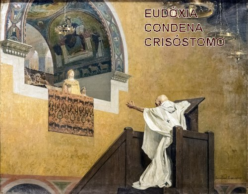
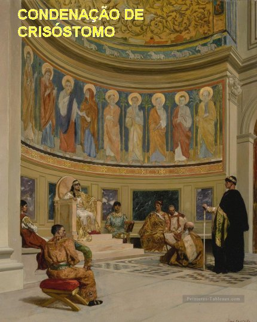
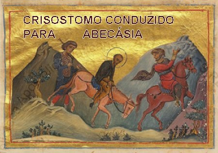
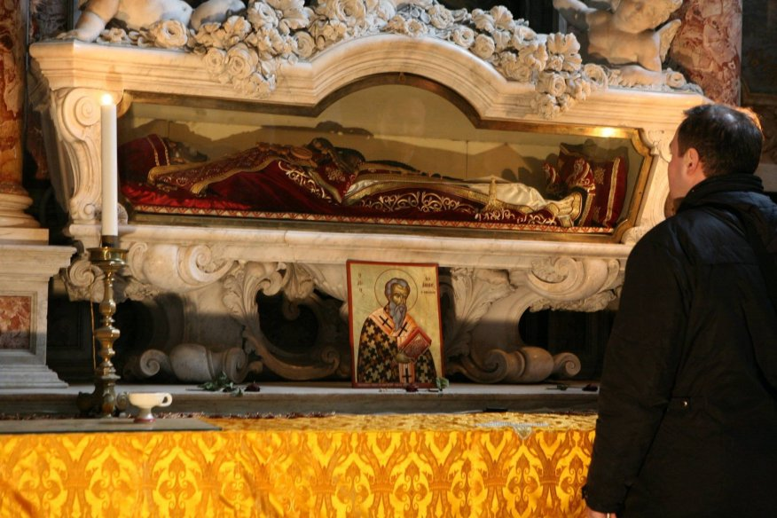
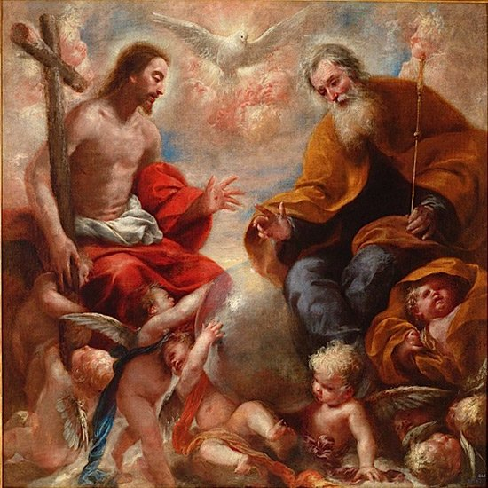

“TERRÍVEIS ARMADILHAS
E MORTE”
SÍNODO DO CARVALHO
Para cobrir a sua ausência,
deixou a frente da Igreja de Constantinopla o seu rival, Bispo Severiano, a quem
Crisóstomo confiara algumas funções eclesiásticas, 
A situação complicou quando Teófilo, Arcebispo de Alexandria foi chamado à capital pelo Imperador para se defender de acusações perante um Sínodo – mais tarde conhecido como “Sínodo do Carvalho”, realizado em 403, no subúrbio da Calcedônia, - o qual seria presidido por Crisóstomo. Teófilo chegou, e veio bem preparado, trazendo ao Sínodo cerca de 29 Bispos, seus sufragâneos (subordinados a ele) e mais outros sete. Iniciada a assembléia, ao invés dele ser julgado por causa dos seus muitos erros, apresentou uma longa lista de infundadas acusações contra João Crisóstomo, o qual, diante de tal situação, passou da posição de Juiz, que era na verdade, para a condição de Réu. Teófilo começou acusando João Crisóstomo de ter acolhido e dado proteção a quatro monges egípcios, que tinham sido disciplinados e excomungados por ele, e que João Crisóstomo os acolheu em Constantinopla. Os Monges egípcios eram origenistas, isto é, de tendência teológica cristã Origenista, baseada na Teologia iniciada por Orígenes, grande teólogo cristão de Alexandria; significa dizer que a teologia era cristã e não fundamentada em outra fé; e também, acusou João, de ter extrapolado os limites da sua Jurisdição no âmbito eclesiástico, tendo deposto na Ásia, no ano 401, seis bispos que foram indignamente eleitos. Os mencionados religiosos se tornaram Bispos através de uma trama arquitetada. Então, obviamente, João recusou a reconhecer a legitimidade daquela manobra e se afastou, deixou de comparecer às reuniões. À vista de sua ausência, após três convocações, os Bispos que tramavam deram o golpe, declararam que João Crisóstomo, estava deposto da Sé Episcopal e estava condenado ao exílio. João, não ofereceu qualquer resistência, e embora o povo logo começasse a reagir, defendendo o seu amado pastor, as falsas autoridades do Sínodo, o entregou aos soldados que o levaram ao exílio na Bitínia.
Entretanto, como era de se esperar, o povo já revoltado com a detenção de Crisóstomo, na continuidade dos dias, assumiu atitudes ameaçadoras, exigindo a permanência de João na Sé. E o barulho foi tão grande que o Governo Imperial ficou receoso e se ocultou. A Imperatriz Elia Eudóxia, cheia de suspertição, com medo de alguma punição Divina, por aquela abominável condenação, ela que ocultamente tinha manobrado todos os acontecimentos, ordenou que re-empossassem o Arcebispo João Crisóstomo. Ele então retornou, e Teófilo que tinha vindo de Alexandria, e preparado toda aquela tramóia, apavorado e com receio de alguma consequência, fugiu de Constantinopla. Por sua vez, a Imperatriz Elia Eudóxia com aquela derrota, ainda ficou mais possessa de raiva contra João Crisóstomo.

Apenas decorrido dois meses daquela trama, novo incidente envolvendo João Crisóstomo e a Imperatriz, agravou a convivência e a permanência dele. Em frente à Igreja de Santa Sofia em Constantinopla, erigiram uma estátua de prata da Imperatriz, no tamanho humano. Os jogos públicos programados para a inauguração foram barulhentos e em horário inoportuno, porque prejudicou as funções litúrgicas da Santa Missa que estava sendo celebrada. O Arcebispo João Crisóstomo, com a coragem que lhe era peculiar, e seu zelo amoroso pelo ambiente sagrado, do púlpito elevou sua voz criticando aquela falta de respeito e provocante abuso, organizado pelo Inspetor de Jogos do Imperador, um homem da seita maniqueu. Quando levaram o fato ao conhecimento da Imperatriz, ela num acesso de vaidade recebeu aquelas palavras como se tivessem sido dirigidas a ela. Imediatamente convocou os inimigos de João Crisóstomo para arrancá-lo da Sé Cristã em Constantinopla. Os Bispos partidários da Imperatriz, logo arranjaram um jeito de formalizar a culpa e conseguiram do Imperador o Decreto de Banimento. Desse modo, no ano 406 João Crisóstomo foi conduzido para o seu segundo exílio. Foi transportado para Cucuse (Armênia), onde teve de suportar os rigores do clima, da fome, as incursões de bárbaros e isolamento. Mas daquele local, ele conseguiu manter correspondência com amigos e discípulos e inclusive enviou carta descrevendo todos os fatos para o Papa Inocêncio I. O Papa indignado com aqueles maus Bispos destituiu vários deles e dirigiu palavras confortantes a João Crisóstomo. Infelizmente o Papa estava certo da sua inocência, mas não podia ajudá-lo porque embora a Igreja Católica estivesse unida a Igreja Bizantina, ainda não existia um protocolo que regesse o relacionamento entre as duas entidades cristãs. Por esse motivo, ele não teve chances de retirá-lo do exílio.
O ARCEBISPO JOÃO CRISÓSTOMO FALECEU

Os inimigos dele em Constantinopla souberam das noticias, dos contatos que João fazia com seus amigos e a correspondência com o Papa; eles então recearam a possibilidade de um retorno de João a Sé em Constantinopla, ainda em 406. Por essa razão, decidiram transferi-lo para a cidade de Pitionte, na Abecásia, local próximo do Cáucaso, no limite extremo do Império. Foi uma caminhada terrível e abominável, sob sol escaldante, além das chuvas, agravadas pelas covardias e má disposição dos soldados, verdadeiros carrascos. Foram caminhadas tão longas, com tanto esforço, que esgotou totalmente o seu estado físico; e assim, sem mais nenhuma resistência, não conseguiu chegar a Abecásia. A marcha para a morte se deteve em Comana Pontica. Lá, João foi levado à Capela do Mártir São Basilisco, onde finalmente entregou o seu espírito a DEUS e foi sepultado, como Mártir junto do Mártir Basilisco. Era o dia 14 de setembro de 407, festa da Exaltação da Santa Cruz.
A reabilitação de João Crisóstomo aconteceu no ano 438. Do sepulcro de Comana, Teodósio II, filho do Imperador Arcádio e da Imperatriz Elia Eudóxia, trouxe as relíquias que chegou à noite do dia 28 de Janeiro de 438, e foram colocadas na Igreja dos Santos Apóstolos, em Constantinopla, tendo sido recepcionadas por uma multidão de pessoas que aplaudiram freneticamente. Ali ele permaneceu. No ano 1204 as relíquias foram transportadas a Roma, para a primitiva Basílica de Constantino e agora, elas jazem na Capela do Coro dos Canônicos da Basílica de São Pedro.

Em 24 de agosto de 2004, uma parte importante das relíquias foi entregue pelo Papa João Paulo II ao patriarca Bartolomeu I de Constantinopla. A memória litúrgica do santo se celebra anualmente no dia 13 de setembro. O Beato Papa João XXIII o proclamou padroeiro do Concílio Vaticano II.
SEU AMOR A DEUS E SUAS ÚLTIMAS PALAVRAS
De João Crisóstomo se disse que, quando ele se assentou no trono da Nova Roma, ou seja, de Constantinopla, DEUS fez ver nele um segundo Paulo, outro doutor do universo. Na realidade, em Crisóstomo se dá uma unidade essencial de pensamento e de ação, tanto em Antioquia como em Constantinopla. Só mudou mesmo, o seu desempenho em face das diferentes situações. Ao meditar nas Sagradas Escrituras, João Crisóstomo desejaria que os fiéis se remontassem a Obra do CRIADOR. Porque o SENHOR nos mostra a beleza da criação e a “transparência de DEUS na criação”, transparência, que se converte numa espécie de “escada” que favorece o acesso ao “DEUS DA VIDA”, para conhecê-lo melhor e amá-lo com todas as forças do coração.
A este primeiro passo se segue
outro: o DEUS CRIADOR é também o “DEUS da Condescendência”. Nós
somos fracos e inconstantes para “ascendermos”, por nossa 
E para felicidade e alegria da humanidade criada, ao primeiro passo da Criação como “escada” de “acesso a DEUS”, e ao segundo passo pela “Condescendência de DEUS”, através da Carta (Sagrada Escritura) que nos deu, ELE acrescenta um terceiro passo: DEUS não só nos transmite uma Carta, “ELE Mesmo veio em Pessoa”, desceu, encarnou-se, revelou-se o verdadeiro “DEUS Conosco”, na “Pessoa de JESUS”, Nosso Querido e Amado Irmão, que enfrentou flagelos terríveis e até a Morte na Cruz, para “Redimir” a humanidade de todas as gerações, nos dando condições de “Vida Eterna”.
Com estes três passos – DEUS se tornou visível na criação. Um DEUS maravilhoso que nos enviou uma “Carta” (a Sagrada Escritura), DEUS que “Desceu da Eternidade para nos Salvar” e SE apresentou como um de nós, e depois de realizar a SUA Magnífica Obra Redentora, nos proporciona um quarto passo: envia-nos o “ESPÍRITO SANTO” para a vida da humanidade, um “Dom Precioso”, vital e dinâmico que transforma as almas e a realidade do mundo. Significa dizer, DEUS entra em nossa própria existência através do “ESPÍRITO SANTO”e transforma cada um de nós, que “amamos a SUA Presença”, e vem estimular nossa vida desde o Batismo, permanecendo no âmago de nosso coração.
E finalmente, dando o necessário acabamento a SUA DIVINA OBRA, o SENHOR DEUS CRIADOR, para defender os seus filhos, a humanidade de todas as gerações, da terrível e permanente inveja e maldade do maligno, além de nos ter enviado o SEU FILHO JESUS NOSSO REDENTOR E MEDIADOR INCOMPARÁVEL>deixou-nos também uma "PRECIOSA ADVOGADA, para também interceder por nós e ser a ADORÁVEL E ETERNA MÃE DE NOSSA ALMA. ELA É A QUERIDA E AMADA MÃE DE JESUS, ADORADO FILHO DO MISERICORDIOSO PAI ETERNO. ELA É NOSSA SENHORA, A SANTÍSSIMA VIRGEM MARIA, A MÃE DE DEUS”, que jamais se esquece de um de seus filhos que rezam e buscam a sua tão querida e estimada intercessão junto ao DEUS DA VIDA.
E assim, João Crisóstomo, no final da sua existência, desde o exílio nas longínquas fronteiras da Armênia, “o lugar mais remoto do mundo”, lembrando-se da sua primeira pregação feita no ano 386, recordou o tema que tanto gostava de falar, a respeito do “Plano de DEUS” para a humanidade. É um plano maravilhoso, inefável e incompreensível, mas certamente, “o mais belo e o melhor de todos afinal, porque guiado por ELE com muita Paciência e Amor”. Esta é a nossa certeza. Ainda que não possamos decifrar os detalhes da história pessoal, “sabemos que o plano de DEUS está eternamente inspirado pelo seu Imenso Amor”. Deste modo, apesar de seus sofrimentos, João Crisóstomo reafirmava a descoberta de que “DEUS Ama cada um de nós com Amor Infinito”, e que por este motivo “ELE quer a Salvação de todos nós”. O Santo Arcebispo, cooperou com esta verdade revelando generosidade, sem poupar esforços, durante toda a sua vida. Trabalhou firme, porque também sempre considerou como fim último da sua existência a “oportunidade de agradecer a DEUS” por SEU IMENSO AMOR e por tudo que ELE nos dá, e poder até gritar: “GLÓRIA A DEUS”. E assim foi exatamente como tudo aconteceu: na Capela do Mártir São Basilisco, onde ele finalmente entregou o seu espírito a DEUS, já exausto, moribundo, deixou como último testamento as suas derradeiras palavras: “GLÓRIA A DEUS POR TUDO!”